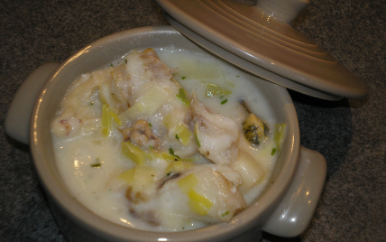

Marmite de la mer

Voici une délicieuse petite recette que l'on peut servir en entrée, ou en plat principal avec du riz.
Ingrédients :
400 g de colin
150 g de fruits de mer (surgelés pour moi)
1 poireau
2 échalotes
40 g de beurre
10 cl de vin blanc sec
10 cl de lait
1 CàS de farine
ciboulette
noix de muscade
Sel
Poivre
Préparation :
Étape 1 :
Faites revenir dans une cocotte, les échalotes dans 20 g de beurre. Remuez, et ajoutez les poireaux coupés en petits morceaux.
Arrosez avec le vin blanc, et montez le feu pour réduire un peu.
Étape 2 :
Ajoutez les fruits de mer. Mettez le couvercle, et laissez cuire 2-3 minutes.
Coupez le colin en petits tronçons. Posez les morceaux dans la cocotte, couvrez, et laissez cuire quelques minutes.
Étape 3 :
Faites une béchamel, dans une autre casserole. Faites fondre le beurre, ajoutez la farine, et remuez. Ajoutez le lait petit à petit. Salez, poivrez, et ajoutez un peu de noix de muscade.
Versez la béchamel dans la cocotte. Saupoudrez de ciboulette. On peut mettre de la crème fraîche à la place de la béchamel.
Étape 4 :
Répartissez dans les petites cocottes, et servez bien chaud.